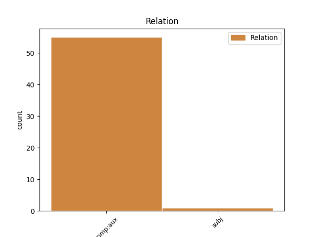
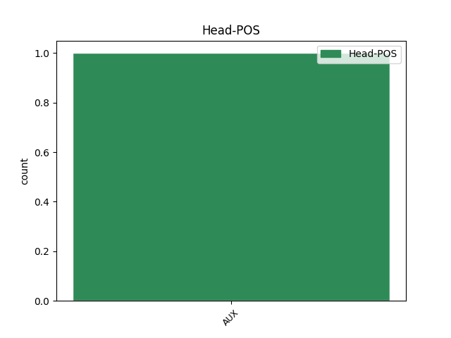
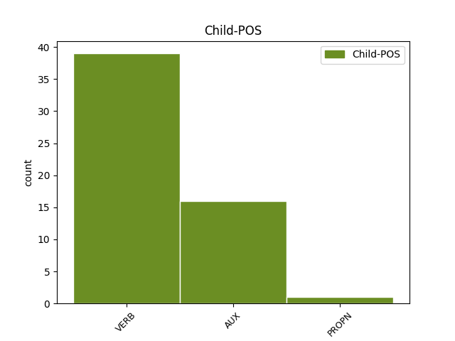

Distribution of features within this leaf



Agreement Rules sorted by frequency.
- When the dependent token is the complement for auxiliary(comp:aux) of the head token, and the dependent token is VERB.
1 اقلیتی _ _ _ _ 0 _ _ _
2 طبقہ _ _ _ _ 0 _ _ _
3 سے _ _ _ _ 0 _ _ _
4 مسٹر _ _ _ _ 0 _ _ _
5 احمد _ _ _ _ 0 _ _ _
6 اللہ _ _ _ _ 0 _ _ _
7 کو _ _ _ _ 0 _ _ _
8 کابینہ _ _ _ _ 0 _ _ _
9 میں _ _ _ _ 0 _ _ _
10 نمائندگی _ _ _ _ 0 _ _ _
11 تقریباً _ _ _ _ 0 _ _ _
12 یقینی _ _ _ _ 0 _ _ _
13 ہے _ _ _ _ 0 _ _ _
14 جو _ _ _ _ 0 _ _ _
15 کہ _ _ _ _ 0 _ _ _
16 ضلع _ _ _ _ 0 _ _ _
17 کڑپہ _ _ _ _ 0 _ _ _
18 سے _ _ _ _ 0 _ _ _
19 تعلق _ _ _ _ 0 _ _ _
20 رکھتے رکھ VERB VM Gender=Masc|Mood=Ind|Number=Plur|Tense=Past|VerbForm=Fin|Voice=Act 21 comp:aux _ ChunkId=VGF2|ChunkType=head|Stype=declarative|Tam=WA|Vib=تھا
21 ہیں ہیں AUX VAUX Gender=Masc|Mood=Ind|Number=Plur|Tense=Pres|VerbForm=Fin 0 _ _ _
22 ۔ _ _ _ _ 0 _ _ _
1 محمد _ _ _ _ 0 _ _ _
2 علی _ _ _ _ 0 _ _ _
3 الدین _ _ _ _ 0 _ _ _
4 قادری _ _ _ _ 0 _ _ _
5 ناظم _ _ _ _ 0 _ _ _
6 اجلاس _ _ _ _ 0 _ _ _
7 ہوں ہے AUX VM Mood=Ind|Number=Sing|Person=3|Tense=Pres|VerbForm=Fin|Voice=Act 8 comp:aux _ AltTag=AUX-VERB|ChunkId=VGF|ChunkType=head|Stype=declarative|Tam=hE|Vib=ہے
8 گے گا AUX VAUX Gender=Masc|Mood=Ind|Number=Plur|Person=3|Tense=Fut|VerbForm=Fin 0 _ _ _
9 ۔ _ _ _ _ 0 _ _ _
Disagree Examples:
1 یاد _ _ _ _ 0 _ _ _
2 رہے _ _ _ _ 0 _ _ _
3 کہ _ _ _ _ 0 _ _ _
4 شادی _ _ _ _ 0 _ _ _
5 کی _ _ _ _ 0 _ _ _
6 تقریب _ _ _ _ 0 _ _ _
7 مےں _ _ _ _ 0 _ _ _
8 حفاظتی _ _ _ _ 0 _ _ _
9 انتظامات _ _ _ _ 0 _ _ _
10 کے _ _ _ _ 0 _ _ _
11 لیے _ _ _ _ 0 _ _ _
12 پولیس _ _ _ _ 0 _ _ _
13 کے _ _ _ _ 0 _ _ _
14 تربیت_یافتہ _ _ _ _ 0 _ _ _
15 کتوں _ _ _ _ 0 _ _ _
16 کی _ _ _ _ 0 _ _ _
17 خدمات _ _ _ _ 0 _ _ _
18 حاصل _ _ _ _ 0 _ _ _
19 کی _ _ _ _ 0 _ _ _
20 جائیں جا AUX VAUX Mood=Sub|Number=Plur|Person=3|VerbForm=Fin 21 comp:aux _ ChunkId=VGF2|ChunkType=child|Tam=eM|Vib=اےں
21 گی گا AUX VAUX Gender=Fem|Mood=Ind|Number=Sing|Tense=Fut|VerbForm=Fin 0 _ _ _
22 جو _ _ _ _ 0 _ _ _
23 شادی _ _ _ _ 0 _ _ _
24 کے _ _ _ _ 0 _ _ _
25 مقام _ _ _ _ 0 _ _ _
26 ویسٹ _ _ _ _ 0 _ _ _
27 منسٹر _ _ _ _ 0 _ _ _
28 ایبے _ _ _ _ 0 _ _ _
29 کے _ _ _ _ 0 _ _ _
30 پورے _ _ _ _ 0 _ _ _
31 علاقہ _ _ _ _ 0 _ _ _
32 کی _ _ _ _ 0 _ _ _
33 نگرانی _ _ _ _ 0 _ _ _
34 کرتے _ _ _ _ 0 _ _ _
35 ہوئے _ _ _ _ 0 _ _ _
36 ہر _ _ _ _ 0 _ _ _
37 شئے _ _ _ _ 0 _ _ _
38 کو _ _ _ _ 0 _ _ _
39 سونگھ _ _ _ _ 0 _ _ _
40 کر _ _ _ _ 0 _ _ _
41 دھماکہ_خیز _ _ _ _ 0 _ _ _
42 مادے _ _ _ _ 0 _ _ _
43 کی _ _ _ _ 0 _ _ _
44 تلاش _ _ _ _ 0 _ _ _
45 کریںگے _ _ _ _ 0 _ _ _
46 ۔ _ _ _ _ 0 _ _ _
1 اس _ _ _ _ 0 _ _ _
2 مسئلہ _ _ _ _ 0 _ _ _
3 کو _ _ _ _ 0 _ _ _
4 حل _ _ _ _ 0 _ _ _
5 کرنے _ _ _ _ 0 _ _ _
6 مےں _ _ _ _ 0 _ _ _
7 اگر _ _ _ _ 0 _ _ _
8 تمام _ _ _ _ 0 _ _ _
9 سیاسی _ _ _ _ 0 _ _ _
10 پارٹیاں _ _ _ _ 0 _ _ _
11 غیرسنجیدگی _ _ _ _ 0 _ _ _
12 کا _ _ _ _ 0 _ _ _
13 مظاہرہ _ _ _ _ 0 _ _ _
14 کریں کر VERB VM Mood=Sub|Number=Sing|VerbForm=Fin|Voice=Act 15 comp:aux _ ChunkId=VGF|ChunkType=head|Stype=declarative|Tam=eM|Vib=ئےں
15 گی گا AUX VAUX Gender=Fem|Mood=Ind|Number=Sing|Person=3|Tense=Fut|VerbForm=Fin 0 _ _ _
16 تو _ _ _ _ 0 _ _ _
17 فرقہ _ _ _ _ 0 _ _ _
18 پرستی _ _ _ _ 0 _ _ _
19 کے _ _ _ _ 0 _ _ _
20 شعلوں _ _ _ _ 0 _ _ _
21 مےں _ _ _ _ 0 _ _ _
22 جلتے _ _ _ _ 0 _ _ _
23 ہوئے _ _ _ _ 0 _ _ _
24 یہ _ _ _ _ 0 _ _ _
25 نام_نہاد _ _ _ _ 0 _ _ _
26 قائدین _ _ _ _ 0 _ _ _
27 صورت_حال _ _ _ _ 0 _ _ _
28 کو _ _ _ _ 0 _ _ _
29 بگاڑنے _ _ _ _ 0 _ _ _
30 کا _ _ _ _ 0 _ _ _
31 موقع _ _ _ _ 0 _ _ _
32 تلاش _ _ _ _ 0 _ _ _
33 کریں _ _ _ _ 0 _ _ _
34 گے _ _ _ _ 0 _ _ _
35 ۔ _ _ _ _ 0 _ _ _
1 اس _ _ _ _ 0 _ _ _
2 مسئلہ _ _ _ _ 0 _ _ _
3 کو _ _ _ _ 0 _ _ _
4 حل _ _ _ _ 0 _ _ _
5 کرنے _ _ _ _ 0 _ _ _
6 مےں _ _ _ _ 0 _ _ _
7 اگر _ _ _ _ 0 _ _ _
8 تمام _ _ _ _ 0 _ _ _
9 سیاسی _ _ _ _ 0 _ _ _
10 پارٹیاں _ _ _ _ 0 _ _ _
11 غیرسنجیدگی _ _ _ _ 0 _ _ _
12 کا _ _ _ _ 0 _ _ _
13 مظاہرہ _ _ _ _ 0 _ _ _
14 کریں _ _ _ _ 0 _ _ _
15 گی _ _ _ _ 0 _ _ _
16 تو _ _ _ _ 0 _ _ _
17 فرقہ _ _ _ _ 0 _ _ _
18 پرستی _ _ _ _ 0 _ _ _
19 کے _ _ _ _ 0 _ _ _
20 شعلوں _ _ _ _ 0 _ _ _
21 مےں _ _ _ _ 0 _ _ _
22 جلتے _ _ _ _ 0 _ _ _
23 ہوئے _ _ _ _ 0 _ _ _
24 یہ _ _ _ _ 0 _ _ _
25 نام_نہاد _ _ _ _ 0 _ _ _
26 قائدین _ _ _ _ 0 _ _ _
27 صورت_حال _ _ _ _ 0 _ _ _
28 کو _ _ _ _ 0 _ _ _
29 بگاڑنے _ _ _ _ 0 _ _ _
30 کا _ _ _ _ 0 _ _ _
31 موقع _ _ _ _ 0 _ _ _
32 تلاش _ _ _ _ 0 _ _ _
33 کریں کر VERB VM Mood=Sub|Number=Sing|VerbForm=Fin|Voice=Act 34 comp:aux _ ChunkId=VGF2|ChunkType=head|Stype=declarative|Tam=eM|Vib=ئےں
34 گے گا AUX VAUX Gender=Masc|Mood=Ind|Number=Sing|Person=3|Tense=Fut|VerbForm=Fin 0 _ _ _
35 ۔ _ _ _ _ 0 _ _ _
1 انہوں _ _ _ _ 0 _ _ _
2 نے _ _ _ _ 0 _ _ _
3 کہا _ _ _ _ 0 _ _ _
4 کہ _ _ _ _ 0 _ _ _
5 اس _ _ _ _ 0 _ _ _
6 کاروبار _ _ _ _ 0 _ _ _
7 کی _ _ _ _ 0 _ _ _
8 یہاں _ _ _ _ 0 _ _ _
9 سے _ _ _ _ 0 _ _ _
10 منتقلی _ _ _ _ 0 _ _ _
11 سے _ _ _ _ 0 _ _ _
12 25 _ _ _ _ 0 _ _ _
13 ہزار _ _ _ _ 0 _ _ _
14 افراد _ _ _ _ 0 _ _ _
15 متاثر _ _ _ _ 0 _ _ _
16 ہوں ہو VERB VM Mood=Sub|Number=Sing|Person=3|VerbForm=Fin|Voice=Act 17 comp:aux _ ChunkId=VGF2|ChunkType=head|Stype=declarative|Tam=eM|Vib=ئےں
17 گے گے AUX VAUX Gender=Masc|Mood=Ind|Number=Plur|Person=3|Tense=Fut|VerbForm=Fin 0 _ _ _
18 جن _ _ _ _ 0 _ _ _
19 کی _ _ _ _ 0 _ _ _
20 زندگی _ _ _ _ 0 _ _ _
21 کا _ _ _ _ 0 _ _ _
22 گذر _ _ _ _ 0 _ _ _
23 بسر _ _ _ _ 0 _ _ _
24 چمڑے _ _ _ _ 0 _ _ _
25 کے _ _ _ _ 0 _ _ _
26 کاروبار _ _ _ _ 0 _ _ _
27 پر _ _ _ _ 0 _ _ _
28 منحصر _ _ _ _ 0 _ _ _
29 ہے _ _ _ _ 0 _ _ _
30 ۔ _ _ _ _ 0 _ _ _
1 بعد _ _ _ _ 0 _ _ _
2 ازاں _ _ _ _ 0 _ _ _
3 اسپیشل _ _ _ _ 0 _ _ _
4 کمشنر _ _ _ _ 0 _ _ _
5 جی _ _ _ _ 0 _ _ _
6 ایچ _ _ _ _ 0 _ _ _
7 ایم _ _ _ _ 0 _ _ _
8 سی _ _ _ _ 0 _ _ _
9 مسٹر _ _ _ _ 0 _ _ _
10 کرشنا _ _ _ _ 0 _ _ _
11 بابو _ _ _ _ 0 _ _ _
12 نے _ _ _ _ 0 _ _ _
13 کہا _ _ _ _ 0 _ _ _
14 کہ _ _ _ _ 0 _ _ _
15 وہ _ _ _ _ 0 _ _ _
16 کسی _ _ _ _ 0 _ _ _
17 بھی _ _ _ _ 0 _ _ _
18 حال _ _ _ _ 0 _ _ _
19 سرکاری _ _ _ _ 0 _ _ _
20 احکامات _ _ _ _ 0 _ _ _
21 کی _ _ _ _ 0 _ _ _
22 عمل_آوری _ _ _ _ 0 _ _ _
23 کریں کر VERB VM Mood=Sub|VerbForm=Fin|Voice=Act 24 comp:aux _ ChunkId=VGF2|ChunkType=head|Stype=declarative|Tam=eM|Vib=ئےں
24 گے گے AUX VAUX Gender=Masc|Mood=Ind|Number=Plur|Person=3|Tense=Fut|VerbForm=Fin 0 _ _ _
25 اور _ _ _ _ 0 _ _ _
26 چمڑے _ _ _ _ 0 _ _ _
27 کی _ _ _ _ 0 _ _ _
28 اس _ _ _ _ 0 _ _ _
29 علاقہ _ _ _ _ 0 _ _ _
30 سے _ _ _ _ 0 _ _ _
31 منتقلی _ _ _ _ 0 _ _ _
32 پر _ _ _ _ 0 _ _ _
33 کارروائی _ _ _ _ 0 _ _ _
34 جاری _ _ _ _ 0 _ _ _
35 رہے _ _ _ _ 0 _ _ _
36 گی _ _ _ _ 0 _ _ _
37 ۔ _ _ _ _ 0 _ _ _